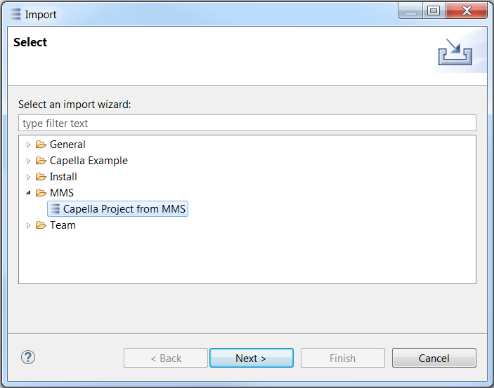
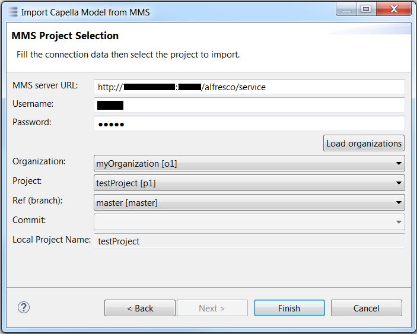

Import wizard
The import wizard is accessible through the main menu File / Import...
Then, within the proposed list, select the item MMS / Capella Project from MMS

Then, follow the sequence described below:
- Fill-in the MMS server URL and its related credentials
- Click on the button Load organizations, to validate the connection and load the organizations
- Then, select which project has to be imported :
- From which Organization
- From which Project
- From which Ref (branch)
- From which Commit
- Then, click on the button Finish, to perform the import
